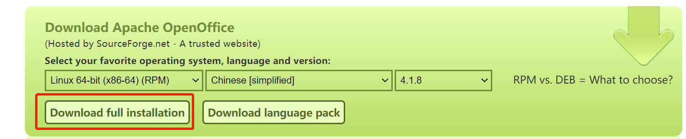

本文介绍了openoffice在Centos7下的安装和启动以及使用的方法，供大家学习和参考。
openoffice包的下载

解压
tar -zxvf Apache_OpenOffice_4.1.8_Linux_x86-64_install-rpm_zh-CN.tar.gz
进入解压目录
cd zh-CN/RPMS
安装
yum localinstall *.rpm
装完后会在当前目录下生成一个desktop-integration目录
cd zh-CN/RPMS/desktop-integration/
rpm -ivh openoffice4.1.5-redhat-menus-4.1.5-9789.noarch.rpm
下载依赖包
yum install libXext.x86_64
下载java环境
yum install jre java-devel
启动
/opt/openoffice4/program/soffice -headless -accept="socket,host=127.0.0.1,port=8100;urp;" -nofirststartwizard
JODConverter下载
安装
unzip jodconverter-2.2.2.zip
使用
必须先启动openoffice的服务，然后再使用这个命令行
java -jar jodconverter-2.2.2/lib/jodconverter-cli-2.2.2.jar inputfileName outputfileName
example
java -jar jodconverter-2.2.2/lib/jodconverter-cli-2.2.2.jar media/01-自然语言处理-中文分词算法的实现.pptx.pptx media/o1.pdf